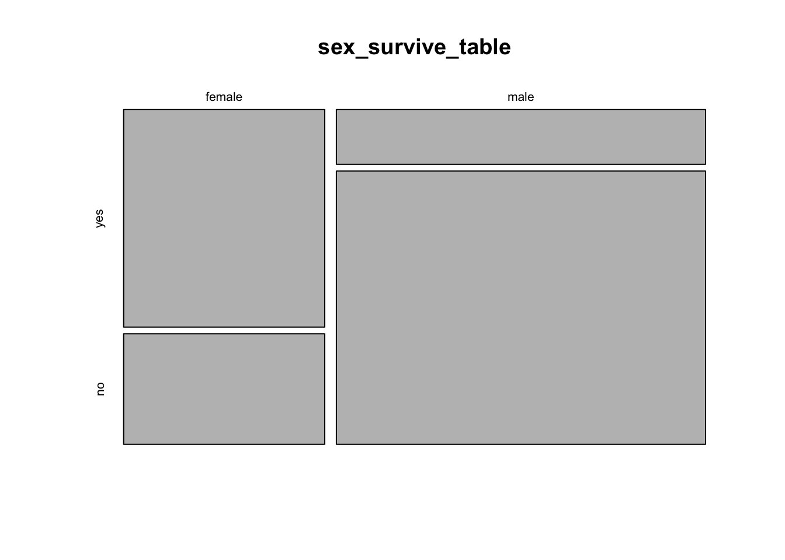
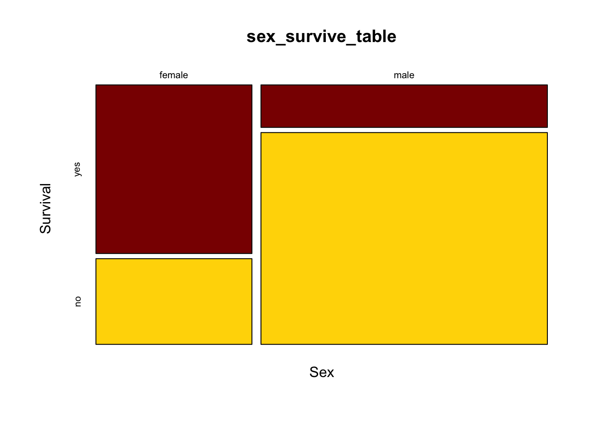

Labs using R:
7: Contingency
analysis
This lab is part of a series designed to accompany a course using The Analysis of Biological Data. The rest of the labs can be found here. This lab is based on topics in Chapter 9 of ABD.
Learning outcomes
Display associations between two categorical variables in contingency tables and mosaic plots
Calculate odds ratios and their confidence intervals
Test for the independence of two categorical variables.
If you have not already done so, download the zip file containing Data, R scripts, and other resources for these labs. Remember to start RStudio from the “ABDLabs.Rproj” file in that folder to make these exercises work more seamlessly.
Learning the tools
In this lab, we will learn how to look at, and test for, the association between two categorical variables. We’ll use the Titanic data set as an example, looking at the association between the sex of passengers and whether they survived the accident. Let’s read the data from the .csv file:
The variables we’ll use are “sex” and “survive”. The variable ”survive” contains a “yes” if the individual survived the sinking and a “no” for those that did not.
Factors
Categorical variables in R are often treated as “factors.” You’lll notice that the read.csv() command above included an option stringsAsFactors=TRUE which tells R to treat all columns that include non-numeric characters to be treated as factors. There are several reasons why treating categorical variables in R as factors is beneficial, but here the most relevant is that factors allow us to set the order of different values or categories of the factors. This ordering will affect the order of appearance of these categories in tables and graphs. This order also matters for some calculations (such as odds ratios, below). The default order of categories is alphabetical, but you can change this.
To see the categories and their order for a factor variable, use the levels() command. For example, the default order of the categories “no” and then “yes” for the variable “survive” in the Titanic data set is alphabetical:
## [1] "no" "yes"We want to change the order so that the “yes” category for survive comes first when we use R to calculate the odds ratio below. This is to ensure that the probability of success (here, “yes”) is in the numerator. We change the order using the levels argument argument of the factor() command:
The above command saves the new ordering of categories in the data frame titanicData, overwriting the original variable “titanicData$survive”. To check the new order:
## [1] "yes" "no"Frequency table
A contingency table is an effective method to see the association between two categorical variables. Moreover, other R functions we will use in this exercise require a contingency table as input.
A frequency table can be created using a function we saw in the last lab, called table(). To create a contingency table that shows the relationship between two categorical variables, we simply give table() the vectors that contain those two variables. Put the explanatory variable first, and then the response variable after a comma.
##
## yes no
## female 307 156
## male 142 708This shows us that in the Titanic data set, there are 156 female passengers who did not survive, 307 females who did survive, and similar information for the males.
It is useful to keep this frequency table as a named object, as we have done here (sex_survive_table). We shall use this table several times in later analyses.
Sometimes for contingency analysis we have already summarized the counts for each case. In these cases it is useful to be able to create a data table directly from these counts. The following syntax will allow you to create a data table directly:
sex_survive_table_direct <- data.frame(yes = c(307,142), no = c(156,708),
row.names = c("female","male"))Mosaic plots
We learned in week 3 how to show associations between categorical variables like this using grouped bar graphs. The mosaic plot is another graphical technique for showing the association between two categorical variables. Here, each combination of the variables is represented by a rectangle, and the size of the rectangle is proportional to the number of individuals in that combination.
R has a function to calculate mosaic plots, with the sensible name mosaicplot(). In its most basic form, you just give it a frequency table as input.

This shows the basic pattern. However, this plot can be greatly improved by adding a couple of extra options, to specify color and axes labels. We can add the option color = c(“darkred”, “gold”) to tell R which colors to use for the different response variables. This is a vector of color names that R assigns in the same order as the order of the categories of the variable plotted on the vertical axis (the response variable) starting with the topmost. (R has many named colors, including all the basics like “red”, “orange”, “blue”, etc.)
We would also like the axes to have labels. We can specify these with xlab and ylab as options. Let’s simply call the x-axis “Sex” and the y-axis “Survival”. Here’s what the command would now look like:

It is much easier now to see in the graph that the majority of females survived whereas the majority of males did not.
Odds ratios
One of the ways to measure the strength of the association between two categorical variables is an odds ratio.
In R, the simplest way to estimate an odds ratio is to use the command fisher.test(). This function will also perform a Fisher’s exact test (more on that later). The input to this function is a contingency table like the one we calculated above. We’ll use the results in a couple of ways, so let’s save the results in an object. (Here we called it sex_survive_fisher.)
The output of this function has several parts, two of which we’ll want to look at now for estimating an odds ratio. We can see the specific elements of the output by using the $ notation.
Add $estimate after the results of the fisher.test() function call to get the odds ratio estimate. For example, if we want to know the odds ratio for survival as a function of sex for the Titanic data, we write:
## odds ratio
## 9.792284This shows that the odds ratio is about 10—the odds of a female surviving were about ten times the odds of a male surviving. This is (female survival / female death) / (male survival / male death). The order of the values in the odds ratios is determined by the order of the values of each variable; by default R uses alphabetical order.
This fisher.test() function also calculates the 95% confidence interval for the odds ratio, and assigns it to an output variable called conf.int. We can see the 95% confidence interval for the odds ratio with a command like:
## [1] 7.471136 12.887759
## attr(,"conf.level")
## [1] 0.95The confidence interval for this odds ratio ranges from about 7.47 to about 12.89.
\(\chi\)2 contingency test
A \(\chi\)2 contingency analysis allows us to test the null hypothesis that two categorical variables are independent of each other.
Because this scenario appears frequently, it is one of the most common tests used in biology. However, remember that the \(\chi\)2 test is an approximation, and requires that all of the expected values are greater than 1 and that at least 80% are greater than 5. When doing such a test of independence on a computer, it is probably better to use Fisher’s exact test, which doesn’t have this restriction.
The \(\chi\)2 contingency test can be done with a function we saw last week, chisq.test(). If we give a frequency table as input, this function will calculate the \(\chi\)2 test for us.
Before we do the test, though, we need to make sure that the assumptions of the \(\chi\)2 test are met by our data. Fortunately, the chisq.test() function also provides a way for us to look at the expected values. If we give a frequency table as input, and then add $expected at the end of the function, it will show us the expected values for a test of independence, like this:
##
## yes no
## female 158.3298 304.6702
## male 290.6702 559.3298In this case all the expected values are greater than 5, so we have no problem meeting this assumption. Therefore, it is appropriate to do a \(\chi\)2 contingency test. Just give a frequency table as input to the chisq.test() function to do this test. We’ve added the option “correct = FALSE” to tell R to not do a Yate’s correction, which can be overly conservative.
##
## Pearson's Chi-squared test
##
## data: sex_survive_table
## X-squared = 327.7, df = 1, p-value < 2.2e-16This output shows that the \(\chi\)2 value for this test is 327.7, with 1 degree of freedom and a P-value less than 2.2 x 10-16. So we can reject the null hypothesis of no association between sex and survival on the Titanic.
Fisher’s exact test
Another, more exact, option for testing for the independence of two categorical variables is Fisher’s exact test. This is a test that is tedious to calculate by hand, but R can do it in a flash. This test makes no approximations and sets no minimum threshold for the sizes of the expected values.
To implement Fisher’s exact test in R, use fisher.test(). This function is easy to use; just give it a frequency table as input.
##
## Fisher's Exact Test for Count Data
##
## data: sex_survive_table
## p-value < 2.2e-16
## alternative hypothesis: true odds ratio is not equal to 1
## 95 percent confidence interval:
## 7.471136 12.887759
## sample estimates:
## odds ratio
## 9.792284Here there is little uncertainty about the presence of an association between sex and survival; the P-value is less that 2.2 x 10-16. (This strange value is the smallest number that can be recorded using the default numerical precision in R.)
Also given in the output here is information about the estimate of the odds ratio and its 95% confidence interval.
Unlike the version of Fisher’s test described in the text, fisher.test() is able to calculate contingency tests even when there are more than two possible values for each variable. In such cases, though, it cannot calculate the odds ratios.
R commands summary

Activities
1. Sampling and contingency tables
The \(\chi\)2 contingency test uses a test statistic called \(\chi\)2. When the null hypothesis is true the distribution of possible values of that \(\chi\)2 is approximately a \(\chi\)2 distribution. We’ll use an online exercise to visualize how well the \(\chi\)2 distribution fits the distribution of the test statistic when the null hypothesis is true.
Open a web browser and navigate to the page at
http://www.zoology.ubc.ca/~whitlock/Kingfisher/ContingencyAnalysis.htm
This page is based on a hypothetical example in which we compare the proportion of people who get sick after either receiving a vaccination or not. When you first open this app, you will see that the true probability of getting sick has been set to 60%, regardless of whether the person is vaccinated or not. Under these conditions, the null hypothesis of a contingency analysis is true: whether or not a person is vaccinated has no effect on whether they get sick. The two variables are independent.
Notice the graph at the bottom right. Before we do anything else, this graph simply shows the \(\chi\)2 distribution with one degree of freedom, as would be appropriate to use for a 2 x 2 contingency analysis as will be performed here.
STEP 1. Click the “MAKE ONE SAMPLE” button once. This will cause the computer to take one sample of n = 120 individuals from the population. A frequency table for that sample is shown on the right side of the page, and under that the \(\chi\)2 and P-value from a \(\chi\)2 contingency test of those data is shown. Also, a vertical blue bar appears on the graph at that value of \(\chi\)2, and the area under the curve to the left of this \(\chi\)2 is shown in red. The area under the curve to the right is the P-value.
Visually compare the P-value to the area under the curve in the graph. Did your sample cause the test to reject the null hypothesis? Or did that sample give the correct answer about the population (i.e., that there is no difference in the sickness rates between vaccinated and unvaccinated people)?
STEP 2. The button “SIMULATE DISTRIBUTION” will take repeated samples from the population and calculate a \(\chi\)2 statistic for each one. In the yellow box on the right, it will keep a tally of how many samples led to hypothesis tests that rejected the null hypothesis of independence. (Rejecting a true null hypothesis is a Type I error.) The program will also make a histogram of the \(\chi\)2 values from all the tests to allow comparison with the \(\chi\)2 distribution.
Check that probability of getting sick is still set to be the same for vaccinated and unvaccinated people in the population parameters. If so, the null hypothesis is in fact true. With a true null hypothesis, the distribution of calculated \(\chi\)2 values (in the histogram) ought to match the theoretical distribution (shown by the thin curve). Do they match? (Note: you won’t get a proportion that exactly matches what we expect, by chance, because we haven’t been able to take an infinite number of samples.)
The calculations in this app assume a significance level of α = 0.05. What fraction of samples should we expect to result in a Type I error?
Notice that there is a “FASTER!” button on the left. If you press this it will speed up the intervals between new samples taken in the simulation.
Run the simulation until there are 1000 or more replicates. What Type I error rate do you observe?
STEP 3. Finally, let’s investigate the distribution of results that you get when the null hypothesis is NOT true. Before we go any further, think about what you would expect to see in the distribution of test statistics when the null hypothesis is false. Should the distribution of test statistics stay the same? Or will it shift towards the right or left?
Let’s have the app simulate a case in which the null hypothesis is false. For example, let’s imagine that the vaccine actually works to some extent, and the probability of vaccinated people getting sick is only 0.35. Change the small white box in the table at the top of the page to 0.35 under “Vaccinated”, but leave the value of 0.6 under the “Unvaccinated” column. Now vaccination status and illness are NOT independent—the probability of getting sick differs between vaccination groups.
To see what the distribution of test statistics is now under this case, let’s simulate samples from this new population. Click “SIMULATE DISTRIBUTION” again. What is the shape of the distribution of test statistics in the histogram? Does it still match the theoretical \(\chi\)2 distribution (shown by the curve)? Remember, the theoretical distribution is what we would get assuming that the null hypothesis is true. When the null hypothesis is false, we expect on average larger values of \(\chi\)2.
Now that the null hypothesis is false, a hypothesis test gets the correct answer when it rejects \(H_0\). The probability that a test correctly rejects a false null hypothesis is called the power of a test. The yellow box on the right tracks the power of the \(\chi\)2 test. This is not a value that we can easily calculate ahead of time in a real setting. Power should be increased by having larger sample sizes or by having larger true deviations from the null hypothesis in the population. You can explore these features of power by changing the sample size (with the slider at the top right) or by making the difference between the vaccinated and unvaccinated groups larger or smaller.
2. Collecting some data
We’ll do an experiment on ourselves. The point of the experiment needs to remain obscure until after the data is collected, so as to not bias the data collection process.
After this paragraph, we reprint the last paragraph of Darwin’s Origin of Species. You can download a page with only this one paragraph to print out. (Print a paper version if you are reading this electronically.) Please read through this paragraph, and circle every letter “t”. Please proceed at a normal reading speed. If you ever realize that you missed a “t” in a previous word, do not retrace your steps to encircle the “t”. You are not expected to get every “t”, so don’t slow down your reading to get the “t”s.
It is interesting to contemplate an entangled bank, clothed with many plants of many kinds, with birds singing on the bushes, with various insects flitting about, and with worms crawling through the damp earth, and to reflect that these elaborately constructed forms, so different from each other, and dependent on each other in so complex a manner, have all been produced by laws acting around us. These laws, taken in the largest sense, being Growth with Reproduction; inheritance which is almost implied by reproduction; Variability from the indirect and direct action of the external conditions of life, and from use and disuse; a Ratio of Increase so high as to lead to a Struggle for Life, and as a consequence to Natural Selection, entailing Divergence of Character and the Extinction of less-improved forms. Thus, from the war of nature, from famine and death, the most exalted object which we are capable of conceiving, namely, the production of the higher animals, directly follows. There is grandeur in this view of life, with its several powers, having been originally breathed into a few forms or into one; and that, whilst this planet has gone cycling on according to the fixed law of gravity, from so simple a beginning endless forms most beautiful and most wonderful have been, and are being, evolved.
Question number 5 will return to this exercise. Please don’t read Question 5 until you have completed this procedure.
Questions
1. On April 18, 1940, most of the participants at a church
supper in Oswego County, NY, developed gastroenteritis (a.k.a. food
poisoning). In what has become a classic of epidemiology, researchers
interviewed most of the people at the supper to discover which dishes
they ate (CDC-EIS 2003). Their answers are in the file “oswego.csv”. In
this file, the variable “ill” records whether that person got sick (Y
for yes, N for no), and there are also columns for whether each person
ate the baked ham, spinach, mashed potatoes, etc., for a total of 14
foods and drinks.
Load the data set into R from the .csv file.
Use factor() to fix the order of “ill” so that the favorable outcome comes first in the levels list. Do the same for each of the food variables that you will analyze, so that “Y” for people that eat the food preceded the “N” for people that didn’t.
Using table() and chisq.test()$expected, calculate the expected values for a \(\chi\)2 contingency test of the relationship between fruit salad and illness. Would it be legitimate to use a \(\chi\)2 contingency analysis to test this association? Why or why not? What test would be best to use?
You want to know which food is most strongly associated with illness. For the sake of simplicity, let’s imagine that we have ruled out all the other foods except for spinach, baked ham, vanilla ice cream and chocolate ice cream. Use fisher.test() to calculate an odds ratio for the illness for each these foods. Which is the most likely vehicle of the disease?
Using the food you think is the likely vehicle, what is the 95% confidence interval of the odds ratio for illness?
For the food you decided in part c is the most likely vehicle, draw a mosaic plot to illustrate how many people got sick as a function of whether they ate this food.
(Researchers later determined that the person who had prepared the specific food that was associated with the gastroenteritis had a Staphylococcus infection, including a lesion on her hand. The food in question had been left to sit overnight at room temperature, which allowed the Staphylococcus to grow to dangerous numbers before the supper.)
2. Return to the data you collected on your class during the
first week. (If you are doing these outside of a class setting,
anonymized data based on a previous classes answers is available as
“studentSampleData.csv”.) Is there an association between dominant hand
and dominant foot?
3. Human names are often of obscure origin, but many have fairly
obvious sources. For example, “Johnson” means “son of John,” “Smith”
refers to an occupation, and “Whitlock” means “white-haired” (from
“white locks”). In Lancashire, U.K., a fair number of people are named
“Shufflebottom,” a name whose origins remain obscure.
Before children learn to walk, they move around in a variety of ways, with most infants preferring a particular mode of transportation. Some crawl on hands and knees, some belly crawl commando-style, and some shuffle around on their bottoms.
A group of researchers decided to ask whether the name “Shufflebottom” might be associated with a propensity to bottom-shuffle. To test this, the compared the frequency of bottom-shufflers among infants with the last name “Shufflebottom” to the frequency of infants named “Walker.” (By the way, this study, like all others in these labs, is real. See Fox et al. 2002.)
They found that 9 out of 41 Walkers moved by bottom-shuffling, while 9 out of 43 Shufflebottoms did. You can find these data in the file “shufflebottoms.csv”.
What is the odds ratio for the association between name and mode of movement? Give a 95% confidence interval for this odds ratio.
Based on the confidence interval for the odds ratio, would you expect that a hypothesis test would find a significant association between name and movement type? Why or why not?
Is there a significant difference between the name groups for mode of movement?
4. Falls are extremely dangerous for the elderly; in fact many
deaths are associated with such falls. Some preventative measures are
possible, and it would be very useful to have ways to predict which
people are at greatest risks for falls.
One doctor noticed that some patients stopped walking when they started to talk, and she thought that the reason might be that it is a challenge for these people to do more than one thing at once. She hypothesized that this might be a cue for future risks, such as for falling, and this led to a study of 58 elderly patients in a nursing home (Lundin-Olsson et al. 1997).
Of these 58 people, 12 stopped walking when talking, while the rest did not. Of the people who stopped walking to talk, 10 had a fall in the next six months. Of the other 46 who did not stop walking to talk, 11 had a fall in that same time period. These data are available in “stopping_falls.csv”.
Draw a mosaic plot of the relationship between stopping to talk and falls.
Carry out an appropriate hypothesis test of the relationship between “stops walking while talking” and falls.
What is the odds ratio of this relationship? Give a 95% confidence interval. Which group has the higher odds of falling?
5. Return to the page from the activities section where you
circled the letter “t” in the paragraph from Darwin’s Origin of
Species. (If you haven’t already done this, please stop reading
here now and go back to do that first.)
The point of this exercise is to collect data on whether our brains perceive words merely as a collection of letters or if sometimes our brains process words as entities. The logic of this test is that, if words are perceived as units, rather than as collections of letters, then this should be especially true for common words. Hence we will look at the errors made in scanning this paragraph, and ask whether we are more (or less) likely to miss finding a “t” when it is part of a common word.
Compare your results to the answer key that marks all the instances of the letter “t”. Note that the answer key marks all “t”s in red, but it also puts boxes around some words. The boxes are drawn around all instances of the letter “t” occurring in common words. “Common” is defined here as among the top-twenty words in terms of frequency of use in English; of these six contain one or more “t”s: the, to, it, that, with, and at. In this passage there are 94 “t”s, and 29 are in common words.
Count how many mistakes you made finding “t”s in common words and in less common words.
Use the appropriate test to ask whether the commonness of a word affects your probability of noticing the “t”s in it. You can create the table needed for the test by a command like:
tCountTable <- data.frame(Common = c (25, 4), Uncommon = c(55, 10), row.names = c("Found", "Not found"))Replace 25 and 4 with the number of t’s in common words that you found or didn’t find, respectively. Replace 55 and 10 with the numbers of t’s you found or didn’t find in uncommon words.